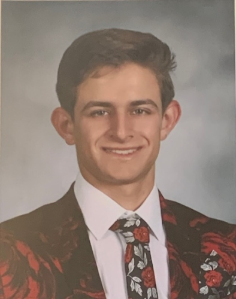

<!doctype html>
<html class="no-js" lang="en" dir="ltr">
<head>
<meta charset="utf-8">
<meta http-equiv="x-ua-compatible" content="ie=edge">
<meta name="viewport" content="width=device-width, initial-scale=1.0">
<title>Aidan's Portfolio</title>
<link rel="stylesheet" href="css/foundation.css">
<link rel="stylesheet" href="css/app.css">
<link rel="preconnect" href="https://fonts.googleapis.com">
<link rel="preconnect" href="https://fonts.gstatic.com" crossorigin>
<link href="https://fonts.googleapis.com/css2?family=Cascadia+Mono:ital,wght@0,200..700;1,200..700&display=swap" rel="stylesheet">
</head>
<body>


<script src="js/vendor/jquery.js"></script>
<script src="js/vendor/what-input.js"></script>
<script src="js/vendor/foundation.js"></script>
<script src="js/app.js"></script>
</body>
</html>
<body>
  
<h1> 
  <div align="center">
  Aidan Currie 
  </h1> 
</div>
  <h2> 
     <div align="center">
E-mail: acurrie2@terpmail.umd.edu | X: @aidan_currie_
</h2> 
</div>

<div class="grid-container">
<div class="grid-x grid-padding-x">
<div class="large-3 medium-3 small-12 cell">
  
</div>

<div class="large-9 medium-9 small-12 cell"> 
	<div class= "bio">
 <p class="bio"> I am a c/o '27 Journalism student at The University of Maryland's Philip Merrill College of Journalism, with an interest in sports writing and reporting. During my freshman year at UMD, I was afforded a plethora of opportunities such as beat-writing for Maryland women's basketball, writing for Maryland Baseball Network, and producing videos for Terrapin Sports Central. Throughout my sophomore year, I've continued working for WMUC, MBN, and TSC, while also covering Maryland field hockey for The Diamondback!</p>
</div>
</div>
</div>


<div class="grid-container">
<div class="grid-x grid-padding-x">
<div class="large-12 medium-12 small-12 cell">
<h3> <div align="center">Journalism Experience:</div></h3>
<h4>Maryland Baseball Network (MBN) </h4>
<h5>Managing Editor | July 2023 - Present </h5>
<p>Edit game stories before they get posted to the MBN website; produce long-form feature stories </p>
<h5>Staff Writer | Feb 2023 - June 2023 </h5>                           
<p>Write game stories and previews; publish live tweets from games; attend weekly media availability</p>

<h4>WMUC Sports</h4> 
<h5>Copy Editor | Aug. 2024 - Present</h5>
<p>Read over stories to make grammar corrections and minor edits before they get posted
Maryland Women’s Basketball Beat Reporter | Nov. 2023 – Present
Myself and another student reporter work together to cover all Maryland women's basketball games 
Traveled to Stanford to cover Maryland’s 2024 NCAA Tournament game against Iowa State</p>

<h4>The Diamondback</h4>
<h5>Field Hockey Beat Reporter | Aug. 2024 - Present</h5>
<p> Produce three stories per week on the Maryland field hockey team – typically two game stories and one midweek</p>
       
<h4>Terrapin Sports Central</h4>
<h5>Student Reporting Staff | Sept. 2023 – Present</h5>
<p>Work in the production room (managing cameras, audio equipment, etc.) to help produce weekly sports-news show 
Film and produce game recaps and video packages that  receive air-time during shows and also get posted to YouTube, Instagram, and Twitter</p>

<h4>Drake Group Education Fund </h4>
<h5>Director of Outreach | Dec. 2023 – Present</h5>
<p>Compile student-conducted investigative reporting on college sports for annual student investigative reporting  prize
Attended the 2024 Allen Sack National Symposium, discussing issues within collegiate athletics</p>

<h4>The562.org  </h4>
<h5>Student Intern | Sept. 2021 – Feb. 2022 </h5>
<p>Writing articles about local sporting events, most of which at the high school or collegiate level
Featured on The562.org’s podcast in Jan. 2022, discussing my internship experience </p>

<h3> <div align="center">Non-Journalism Experience:</div></h3>
<h5> Tillys | Sales Associate | July – Aug. 2024; Dec. 2024 – Jan. 2025 </h5>
<h5>Recreation Park Golf Course 18 | Banquet Server | July – Aug. 2024</h5>
<h5>The Salvation Army Volunteer | Flag Football Coach | Sept. – Nov. 2022</h5>
<h5>Rancho Los Cerritos Volunteer | Front Desk Clerk/Greeter | July - Oct. 2022</h5>
<h5>The Salvation Army Volunteer | Food Pantry | June – Aug. 2022</h5>
<h5>Long Beach Polytechnic High School Student Volunteer | Link Crew Leader | Aug. 2021 & Aug. 2022 </h5>

<h4>Skills:</h4>
 <h5>Adobe Premiere Pro | Adobe Photoshop | Google Sheets | Google Slides </h5>

 <p> <div align="center"> <div class="link"> SEE CLIPS <a href="clips.html">HERE</a> </div></div> </p>


</body>

</html>

